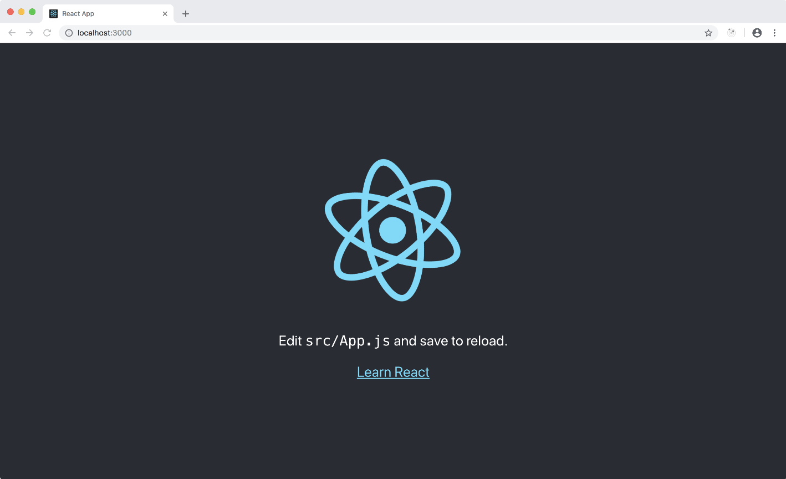

Prerequisites & Setup
Step n.1
The entire set of examples assume that you are going to use create-react-app as boilerplate for you application, so the first step would be to initialize a new CRA project (*):
npx create-react-app cra-ssr --scripts-version react-scripts-rewired
NOTE: We are going to do some cool stuff with code splitting and react-loadable.
Unfortunatelycreate-react-appdoesn't support code splitting very well and we really need to hack into theWebpack.configin order to enable stuff. If you omit--scripts-version react-scripts-rewiredeverything will work just fine, but you will notice some flickering when running the final server side rendered app.
Step n.2
Now you can cd into your project and install the @marcopeg/react-ssr library:
cd cra-ssr
npm install @marcopeg/react-ssr --save
Step n.3
The last step is to install the peer dependencies:
npm install --save \
redux \
react-redux \
react-loadable
Those packages are extremely likely to to be used in your own code base so we decided
not to include them as direct dependencies. You will have full control over their
version and upgrading via your project's package.json.
NPM Scripts
So far we just installed dependencies so the basic scripts that were created by
create-react-app are in place with their default behaviour.
This will not change during the course of this tutorial :-)
I really like the idea of having a common ground in create-react-app (even if I
don't share all the decisions they made!) and I did my best to provide a simple
way to enrich that basic ground without breaking it.
With all that said, you can spin up your app:
npm start

(*) react-scripts-rewired
Most of the examples work with the default setup, but when it comes to the server side rendering of an application that implements code splitting with react-loadable you are goint to need to make a small fix to the default Webpack configuration.
I usually use react-scripts-rewired
which implements a light extension of the default react-scripts package and allows
our project to extend the default configuration:
npx create-react-app cra-ssr --scripts-version react-scripts-rewired